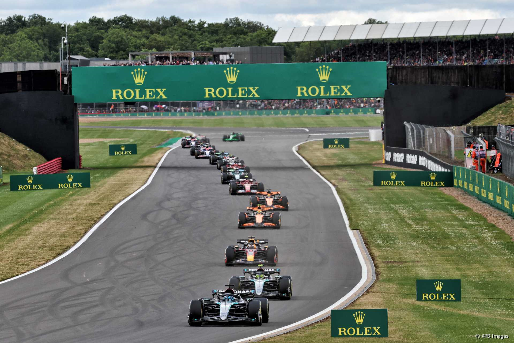
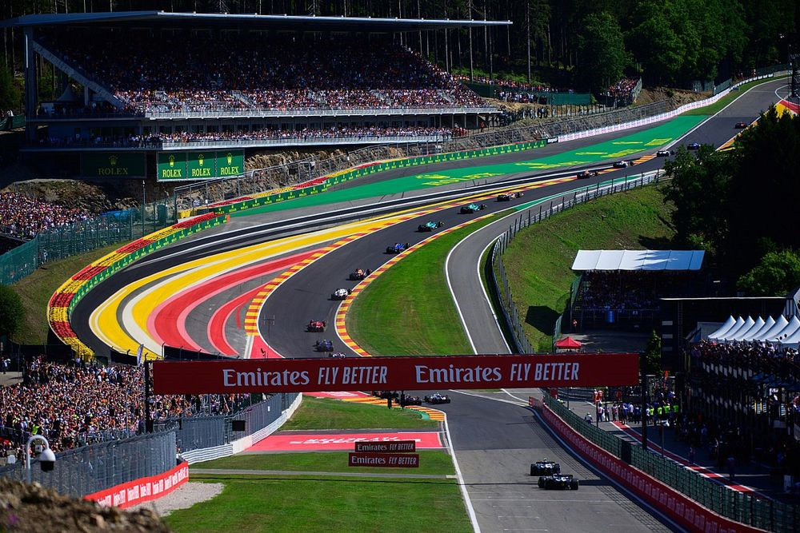

Legendary Circuits of Formula 1

Monaco Grand Prix
The glamorous street race through the streets of Monte Carlo.

Silverstone Circuit
The “Home of British Motorsport” with high-speed corners.

Spa-Francorchamps
A driver’s favorite with its dramatic elevation changes.